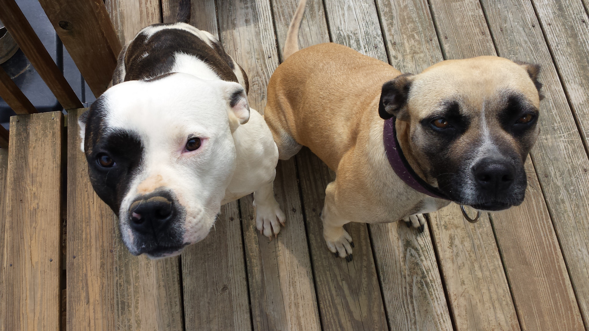

Gloworm Diner

Resturant Description
A diner is a small restaurant found predominantly in the Northeastern United States and Midwestern United States, as well as in other parts of the US, Canada, and parts of Western Europe and Lebanon. A crude precursor of the diner was created in 1872 by Walter Scott, who sold food out of a horse-pulled wagon to employees of the Providence Journal, in Providence, Rhode Island. Scott's diner can be considered the first diner with walk-up service, as it had windows on each side of the wagon.(cite wikipedia)